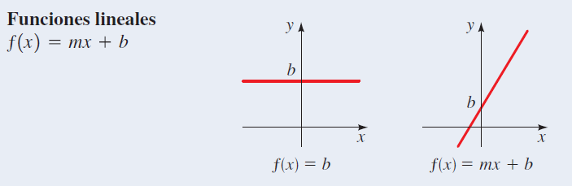
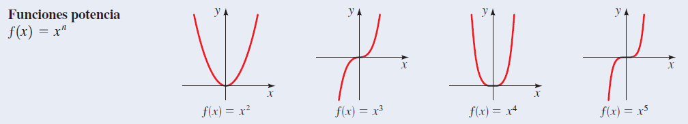
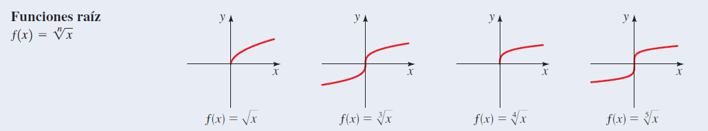
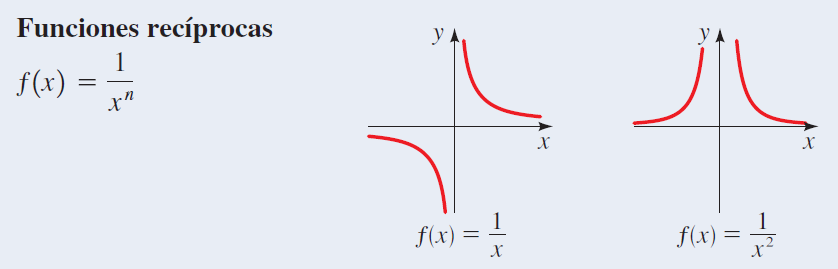
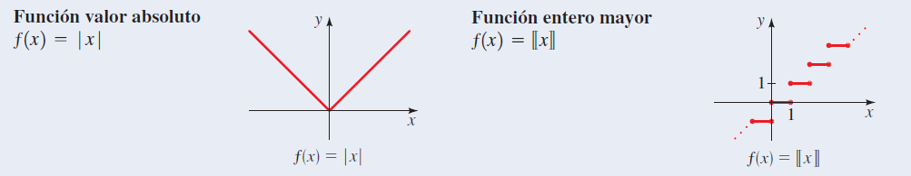

Graficar funciones por localización de puntos
Para graficar una función \( f \), localizamos los puntos \( (x, f(x)) \) en un plano de coordenadas. En otras palabras, localizamos los puntos \( (x, y) \) cuya coordenada \( x \) es una entrada y cuya coordenada \( y \) es la correspondiente salida de la función.
La gráfica de una función
Si \( f \) es una función con dominio \( A \), entonces la gráfica de \( f \) es el conjunto de pares ordenados:
\[ \left\{\left(x,f\left(x\right)\right) \mid x\in A\right\} \]
localizados en un plano de coordenadas. En otras palabras, la gráfica de \( f \) es el conjunto de todos los puntos \( (x, y) \) tales que \( y = f(x) \); esto es, la gráfica de \( f \) es la gráfica de la ecuación \( y = f(x) \).
Graficar funciones con calculadora graficadora
Una forma cómoda de graficar una función es usar una calculadora graficadora. Como la gráfica de una función \( f \) es la gráfica de la ecuación \( y = f(x) \).
Graficar funciones definidas por tramos
Una función definida por tramos está definida por diferentes fórmulas en diferentes partes de su dominio. Como es de esperarse, la gráfica de tal función está formada por tramos separados.
La prueba de la recta vertical
Una curva en el plano de coordenadas es la gráfica de una función si y sólo si ninguna recta vertical cruza la curva más de una vez.
Ecuaciones que definen funciones
Cualquier ecuación con las variables \( x \) y \( y \) define una relación entre estas variables. Por ejemplo, la ecuación:
\[ y - x^2 = 0 \]
define una relación entre \( y \) y \( x \). ¿Esta ecuación define a \( y \) como función de \( x \)? Para saberlo, despejamos \( y \) y obtenemos:
\[ y = x^2 \]
Vemos que la ecuación define una regla, o función, que da un valor de \( y \) por cada valor de \( x \). Podemos expresar esta regla en notación de funciones como:
\[ f\left(x\right) = x^2 \]
Pero no toda ecuación define a \( y \) como función de \( x \).
Algunas funciones y sus gráficas




